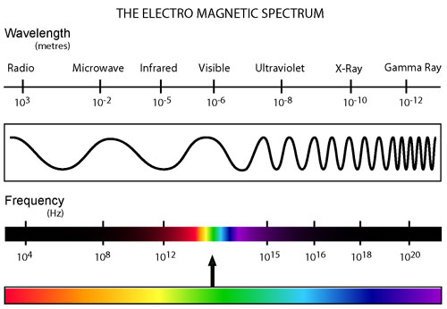

Radyasyon ve Elektromanyetik Spektrum
Türkçe’de genellikle radyasyon vücuda girip mutant eden enerji anlamında kullanılsa da radyasyon kelime anlamı bakımından elektromanyetik dalga halindeki bütün enerjilerin ortak adıdır. Buna radyo dalgaları, mikrodalga, görülebilir ışık ve hatta ısı da dahildir. Radyasyonun kahve ortamlarında bilinen bu anlamını karşılayan asıl terim iyonlaştırıcı radyasyondur.
Radyasyon kavramı olmasaydı hayat ve ondan çok daha önce fizik kuralları geçerli olmayacaktı. Bu evren fizik kuralları olmadan düşünülemez. Uzayzaman denen oluşumu var eden, algılanabilir kılan olgu fizik kurallarıdır. Bunun nedeni evreni oluşturan iki temel etmenin madde ve enerji olmasıdır. Enerji denen şey direkt olarak elektromanyetik dalgalardır. Isı denen kavramsa bu evrenin sıfır hacimde ve etkileşimsiz bir yapıda olmasını engeller.
Radyasyon, yani elektromanyetik dalgalar çok çeşitlidir. Bunların tamamı evrenin bugünkü haline ulaşmasında çok önemli roller oynamıştır. Fakat canlı yaşamı için düşünülecek olursa; kimi elektromanyetik dalgalar canlılığı tehdit eden iyonlaştırıcı yapılarda olsa da, kimisi de canlılığın temeli oluşturmaktadır. Bunlardan en kolay gözlemlenebilen etki canlıların duyu organlarını kullanabilmesini sağlamalarıdır. En basitinden canlılar görülebilir ışık aracılığıyla görür, ısı sayesinde tepki verip hareket eder.
Bilinen tüm elektromanyetik dalgaların bir çizerge üzerinde gösterildiği şekle elektromanyetik spektrum adı verilir. Kimya için periyodik tablo neyse, fizik için de elektromanyetik spektrum aynı anlama gelir. Elektromanyetik spektrum 2 boyutlu bir çizergedir ve tüm dalgalar dalgaboyunun uzunluğuna göre sıralanır.

Elektromanyetik spektruma bakıldığında bir ucunda radyo dalgalarının, diğer ucunda gama ışınlarının olduğu görülür. Görülebilir ışık bu çizergede çok küçük bir alan işgal eder. Dolayısıyla insanların gözleriyle algıladığı elektromanyetik dalga kapasitesi tüm bu dalgalar arasında çok az miktara sahiptir. Kimi hayvanlar ise görme yetenekleri tüm spektruma bakıldığında yine hemen hemen insanlarla aynı kapasiteye sahip olsa da, kızılötesi ışın gibi dalga boylarında da görme yeteneğine sahiptir.
Görülebilir ışığın bir tarafında kızılötesi ışınım, diğer tarafında ise morötesi ışınım bulunur. Kızılötesi ışın bildiğiniz ısıdır. Görülebilen ışığın canlı vücuduna kanıtlanmış herhangi bir zararı yoktur. Canlılar bunu algılayacak şekilde ve buna uygun evrimleştiğine göre olması da mantıklı değil. Görülebilir ışıktan itibaren kızılötesi yönüne gidildiği sürece iyonlaştırıcı radyasyondan bahsedilemez. Diğer yandan, morötesi ışın yönüne doğru gidilirse iyonlaştırıcılık artar. Bu yöndeki ışınımlar canlılık ve maddeler için yapısal bozunuma sebep olur. Görülebilir ışık kırmızı ve mor renk arasında tüm renkleri kapsar.
Burada listelenen tüm dalgaları teker teker inceleyelim. İyonlaştırıcı etkiye sahip ve iyonlaştırıcı olmayan radyasyonu karşılaştırabilmek için en yüksek enerjiye sahip olan gama ışınlarından başlayalım. Bu elektromanyetik dalga atom çekirdeğine girip parçalayabilecek kadar küçük dalgaboyuna sahiptir. Bu yüzden maddelerin atomik yapısını bozarak daha hafif elementlere dönüşmesine sebep olur. Elektron kopartarak veya çekirdekteki nötron ve protonları birbirinden ayırarak bunu gerçekleştirir. Atom bombalarından yayılan radyasyon çeşidi gama ışınlarıdır. Nükleer tepkimelerden meydana gelir ve yüksek hasar verir.
Ardından gelen X ışınları ise en bilinen şekilde röntgen filmi çektirmek için kullanılan elektromanyetik dalgalardır. Bu ışınımın özelliği ise dokunun içinden geçebilirken kemik gibi daha yoğun ve katı kütlelerin içinden geçememesidir. Tıp için ideal bir ışınım olsa da belli bir noktadan sonra kanser edebilecek kadar etkiye neden olabilir. Bu yüzden örneğin hamilelerin röntgen filmi çektirmemesi söylenir. Bu hoş sonuçlar doğurmayacaktır. Kanser denen hastalık kalıtsal materyalleri bozulmuş olan hücrelerin kontrolsüzce üremesinden ibarettir. Normal hücreler üreme işlemini yaparken bunu belli kurallar dahilinde yapar, fakat kanser hücreleri yalnızca üremeye odaklanmıştır. İyonlaştırıcı radyasyona maruz kalan bir organizmada DNA ve RNA materyallerinin yapısı bozulduğunda bu gerçekleşir. Yetişkin bir insanın vücudu röntgen filmi çektirmek için uygulanan radyasyonu absorbe eder. Fakat bir embriyo, gelişmekte olan bir canlı yavrusu biyolojik açıdan tamamen vücudunu oluşturmaya odaklandığından dolayı bunu engelleyemez. Gelişmekte olan hücrelerde oluşan bir bozukluk vücut geliştikçe daha çok alana yayılacaktır.
Morötesi veya ultraviyole ışınlar ise uzaydan dünyaya ulaşabilen, canlılara zararlı nadir radyasyon çeşitlerindendir. Bu ışınların ise ufak bir bölümü dünyaya ulaşır. Şiddetli güneş ışınları altında uzun süre kalındığında cilt kanseri riskini doğuran şey de bu ışınımdır.
Görülebilir ışığın diğer tarafında kalan kızılötesi ışınımın ısı olduğu söylenmişti. Bu noktada artık iyonlaştırıcılık işlevini yitiriyor. Bu gibi ışınların iyonlaştırabilmesi, yani temel yapıtaşlarını parçalayabilmesi için çok fazla miktarının çok küçük bir alanda uzun süre uygulanması gerekli. Bilindiği üzere bu radyasyon çeşidi çeşitli teknolojik uygulamalarda kısa mesafeli veri ve sinyal aktarımı gibi basit işlevler için kullanılıyor. Televizyon uzaktan kumandaları örneğin bu ışınım aracılığı ile temel işlevini yerine getirir. Bunun dışında kullanıldığı en önemli alanlardan biri ise termal kamera ve gözlükler gibi ısı tespiti yapan cihazlardır. Yılan gibi kimi hayvanlarda ise bu özellik yüklü olarak gelir.
Mikrodalga ışınım ise bilindiği gibi mikrodalga fırınları var eden radyasyon çeşididir. Bu ışınların tek esprisi su ve yağ gibi molekülleri yüksek hızda titreştirerek gıda gibi maddeleri ısıtabilmesidir. Bu yüzden mikrodalga fırında bir besinin ısınabilmesi için içinde bir miktar sıvı içermesi gerekir. İyonlaştırmaz, yalnızca ortamda yeterince sıvı varsa ısıyı yükseltir.
Radyo dalgaları çok geniş kullanım alanına sahip önemli bir radyasyon çeşididir. Elektromanyetik spektrum içerisinde iyonlaştırma olayına en uzak elektromanyetik dalgalardır. Dalgaboyu bir bina boyutuna dahi ulaşabilir. Bu yüzden iyonlaştırmayla en ufak bir alakası dahi yoktur. Radyo dalgaları her yerdedir. Tüm elektronik cihazlar radyo dalgaları yayar. Yayın yapan radyo vericileri, tv vericileri radyo dalgalarını kullanır. Bu dalgalar istendiği zaman kullanılabilecek şekilde her noktayı sarar ve elektrik yükü taşır. Bu nedenle havadaki bu düşük elektrik enerjisine sahip dalgalar basit bir devreyle bile toplanarak kullanılabilir. Pilsiz, ekstra enerji gerektirmeden çalışan basit bir radyo yapmak dahi mümkündür. Nikola Tesla’nın kimi çalışmaları radyo dalgaları üzerinden dünyanın her tarafındaki insanlara ücretsiz elektrik sunma üzerine olmuştur. Tüm bunların dışında cep telefonları radyo dalgalarıyla çalışır. Dolayısıyla farklı bir elektromanyetik dalga yaymadığı sürece kanıtlanmış hiçbir zararı yoktur. Cep telefonları olsun olmasın, radyo dalgalarından kaçmanın bir yolu yoktur.
Uzayda her yönden radyasyon fışkırır. Dünyadaki manyetosfer, iyonosfer ve ozon tabakası ise bu ışınları önemli ölçüde engeller. Uzaydan gelen çeşitli elektromanyetik dalgaları dinleyerek akıllı varlık arama çalışmaları olmuştur. Bunların temel mantığı evrende düzensiz şekilde dolaşan, aktif gök cisimlerinden gelen dalgaların aksine düzenli ve akıllı bir varlığın üretmesi olası dalgalar aramak şeklindedir. Bu yüzden pulsar denen yıldızlar keşfedildiğinde bilim adamları başta bir dumur olmuştur. Çünkü bu yıldızlar manyetik kutuplarından elektromanyetik dalgalar yayar ve daha farklı açıdaki dönme eksenleri etrafında döndükleri sürece deniz feneri gibi düzenli kesintilere sahip sinyaller gönderirler. Bunların gönderdiği sinyal periyotları en az atom saatleri kadar az hata oranına sahiptir. Evrendeki en az geri kalan saatlerden biridir.